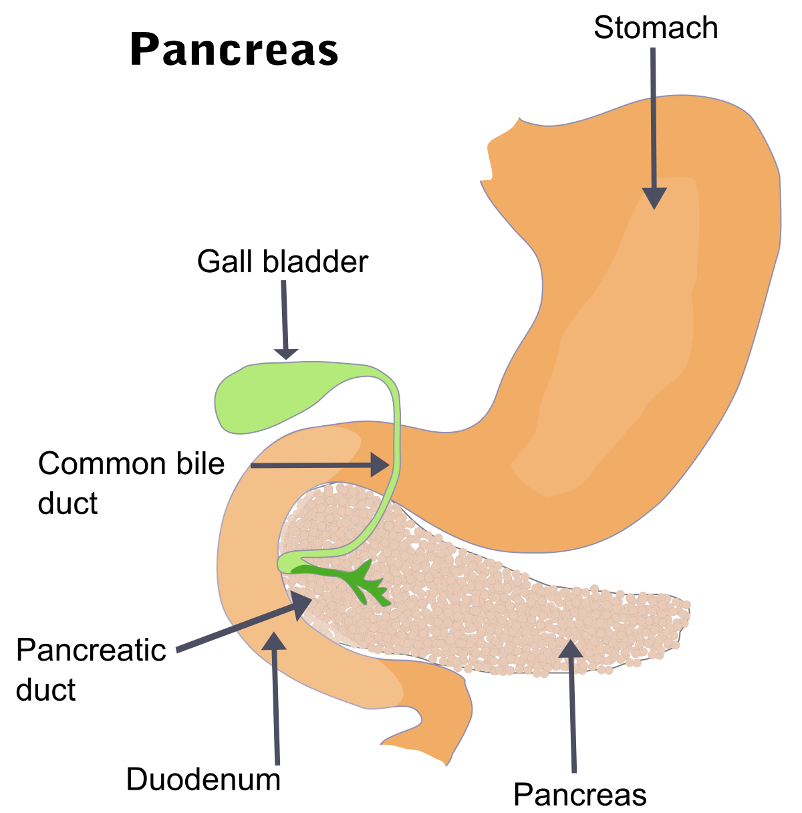

Bleeding

SYMPTOMS:
Signs and symptoms of GI bleeding can be either obvious (overt) or hidden (occult). Signs and symptoms depend on the location of the bleed, which can be anywhere on the GI tract, from where it starts — the mouth — to where it ends — the anus — and the rate of bleeding.
- Vomiting blood, which might be red or might be dark brown and resemble coffee grounds in texture
-
Black, tarry stool
-
Lightheadedness
-
Difficulty breathing
-
Fainting
-
Chest pain
-
Abdominal pain
-
Rectal bleeding, usually in or with stool
CAUSES
Upper GI bleeding
Causes can include.
- Peptic ulcer. This is the most common cause of upper GI bleeding. Peptic ulcers are sores that develop on the lining of the stomach and upper portion of the small intestine. Stomach acid, either from bacteria or use of anti-inflammatory drugs, damages the lining, leading to formation of sores.
-
Tears in the lining of the tube that connects your throat to your stomach (esophagus). Known as Mallory-Weiss tears, they can cause a lot of bleeding. These are most common in people who drink alcohol to excess.
-
Abnormal, enlarged veins in the esophagus (esophageal varices). This condition occurs most often in people with serious liver disease.
-
Esophagitis. This inflammation of the esophagus is most commonly caused by gastroesophageal reflux disease (GERD).
Lower GI bleeding
Causes can include.
- Diverticular disease. This involves the development of small, bulging pouches in the digestive tract (diverticulosis). If one or more of the pouches become inflamed or infected, it's called diverticulitis.
-
Inflammatory bowel disease (IBD). This includes ulcerative colitis, which causes inflammation and sores in the colon and rectum, and Crohn's disease, and inflammation of the lining of the digestive tract.
-
Tumors. Noncanerous (benign) or cancerous tumors of the esophagus, stomach, colon or rectum can weaken the lining of the digestive tract and cause bleeding.
-
Colon polyps. Small clumps of cells that form on the lining of your colon can cause bleeding. Most are harmless, but some might be cancerous or can become cancerous if not removed.
-
Hemorrhoids. These are swollen veins in your anus or lower rectum, similar to varicose veins.
-
Anal fissures. These are small tears in the lining of the anus.
-
Proctitis. Inflammation of the lining of the rectum can cause rectal bleeding.